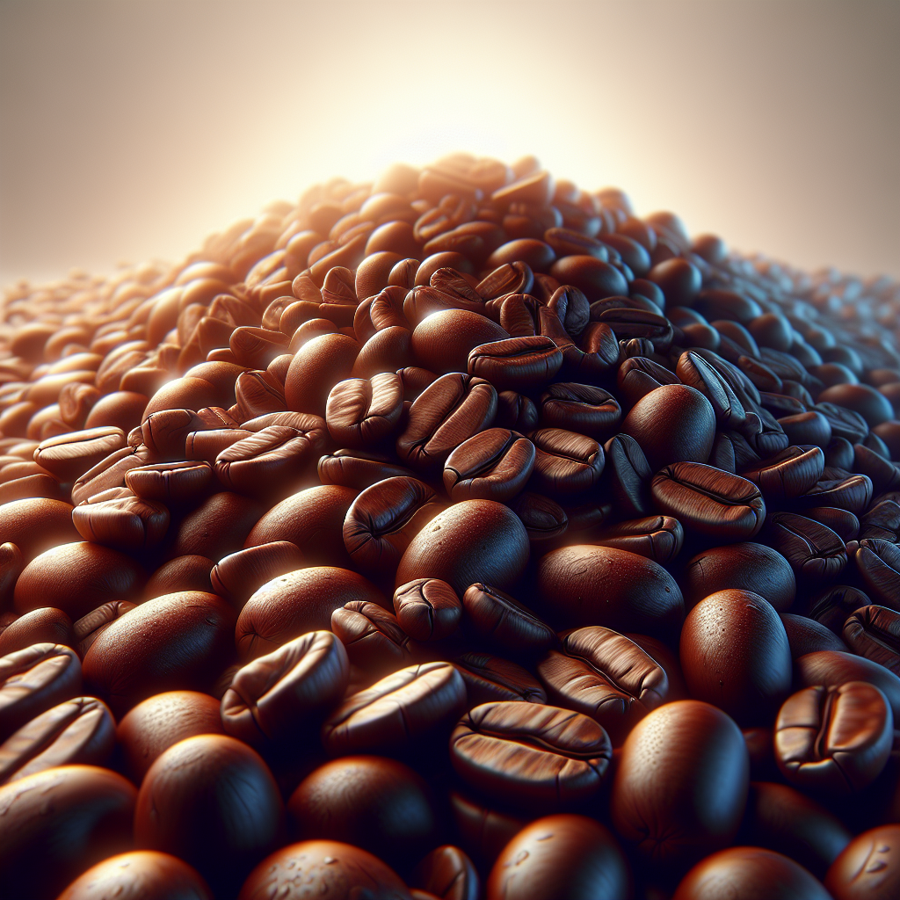

Arabica
Arabica beans are known for their smooth, sweet flavor and aromatic qualities. They are the most popular coffee beans worldwide.
Arabica beans are known for their smooth, sweet flavor and aromatic qualities. They are the most popular coffee beans worldwide.

Robusta beans contain more caffeine and have a stronger, more bitter taste compared to Arabica. They're often used in espresso blends.

Liberica is a rare coffee variety with a distinct fruity and floral aroma, mostly grown in the Philippines and Malaysia.

Excelsa beans offer a tart, fruity profile and are often used to add depth to blends. They are a unique and lesser-known coffee type.